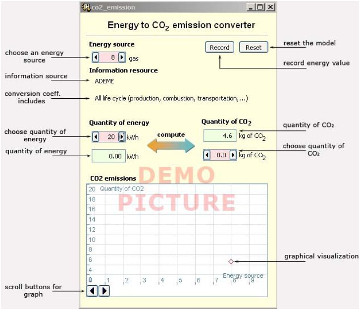

Manual for the CO2 converter
CO2 converter helps you to find out how much CO2 is produced in case of using different energy sources. With each type of energy source, you also get additional information about the source and the data conversion coefficient. There are fifty different energy resources – commonly used and exotic ones. All the input values have pink and output values green background color.
Instruction
• Choose an energy source.
• Choose the quantity of energy.
• Look at the result in the “Quantity of CO2” cell.
• If you want, you can record energy value and see the outcome on a graph. On the graph, the x-axis presents the energy source and the y-axis quantity of CO2.
• Choose another energy source or quantity of energy.
• If you want, you can reset all the values by clicking on the “Reset” button.
• You can also choose the energy source and quantity of CO2 and the converter calculates the quantity of energy.
• You can scroll the graph using the scroll buttons if there is more energy sources recorded.

Figure. Energy to CO2 emission converter.